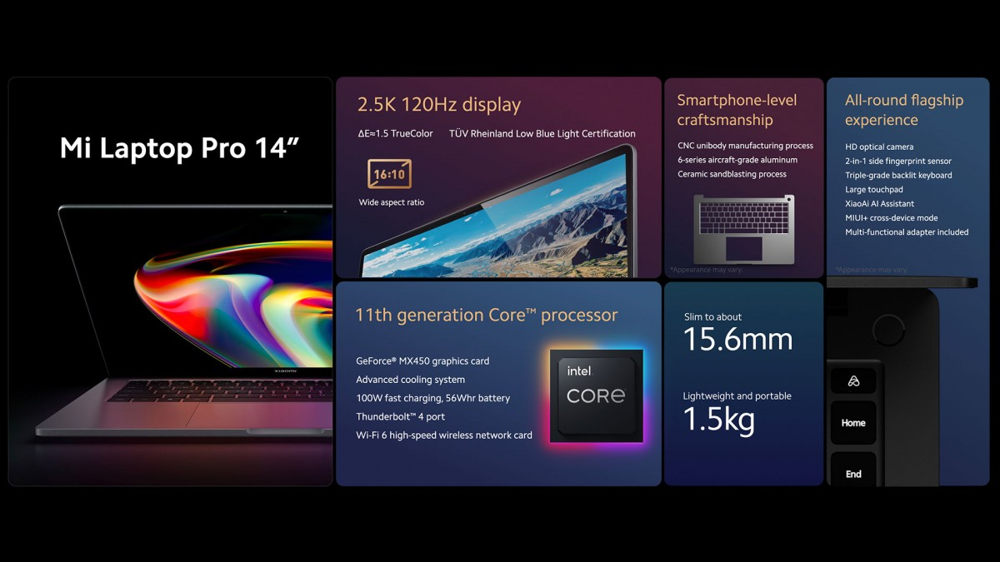
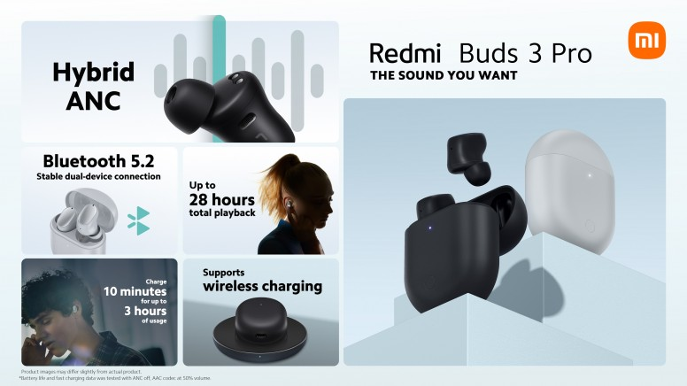
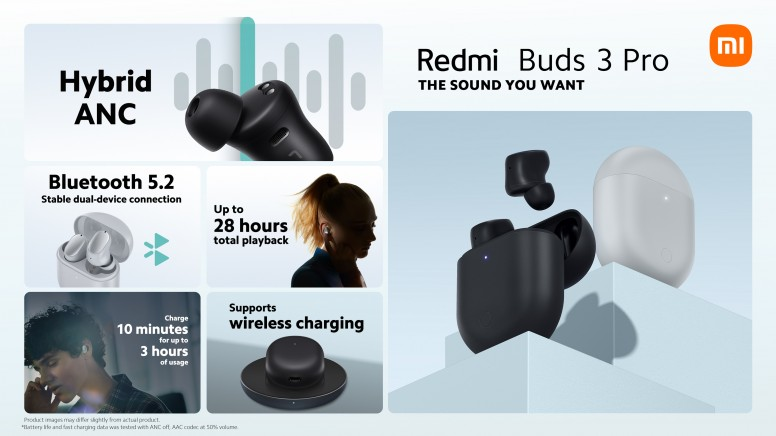

Mi Notebook Pro 15 is a new generation gadget that will help you enjoy
high-quality modern games or simplify all your computer work. This
ultra-productive laptop comes in handy for a variety of tasks. In
addition to the already mentioned games, Mi Notebook Pro 15 will pull
in high-cost specialized programs, which is so important for designers
and developers. evice has a screen diagonal of 15.6 ", wide viewing
angles, and high-quality expansion, which helps you to tirelessly
watch videos or your favorite movies and TV shows on it. The gadget is
unusually durable in a small size. The device is supported by an Intel
Core 11 processor! The RAM of the laptop is 8 GB, and the built-in one
is represented by a 512 GB SSD.

 
